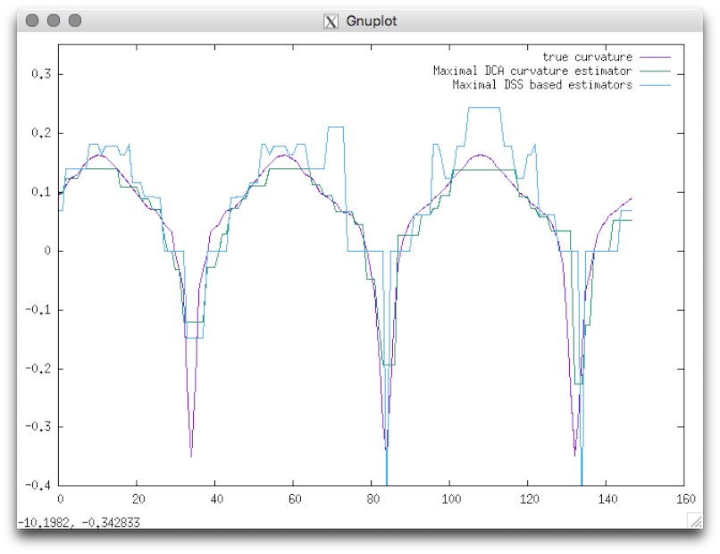
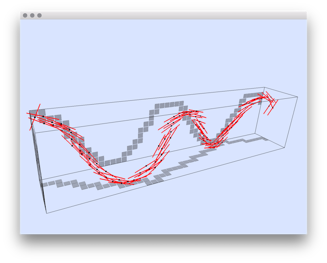
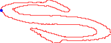
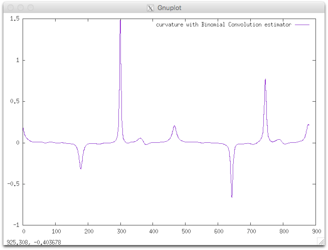
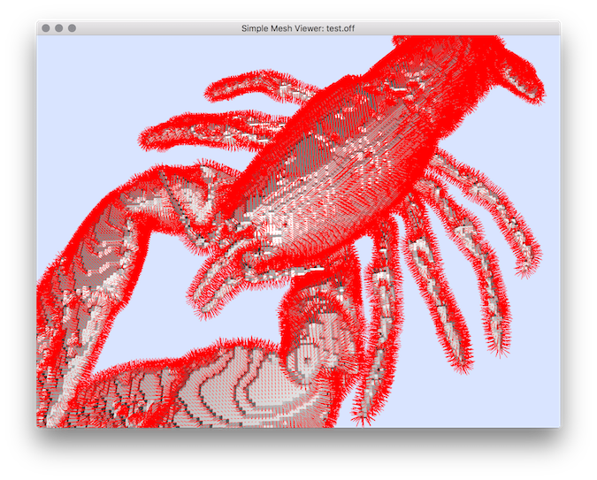
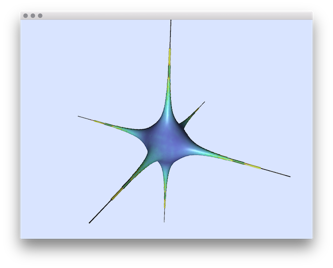
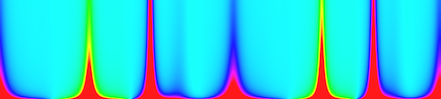

DGtalTools
1.2.beta
Estimators
Author(s) of this documentation: Bertrand Kerautret
Estimators
2dLocalEstimators
: compares local estimators on implicit shapes using
DGtal
Library.
3dCurveTangentEstimator
: estimates the tangent vector to a set of 3D integer points.
3dLocalEstimators
: compares local estimators on implicit shapes using
DGtal
library.
curvatureBC
: estimates curvature using a binomial convolver.
curvatureMCMS
: estimates curvature using length of most centered segment computers.
curvatureScaleSpaceBCC
: generates the Curvature Scale Space image using a binomial convolver based estimator.
eulerCharacteristic
: computes the Euleur Characteristic of a vol to a 8-bit raw file.
generic3dNormalEstimators
: computes a normal vector field over a digitized 3D implicit surface for several estimators.
lengthEstimators
: generates multigrid length estimations of paramteric shapes using
DGtal
library.
statisticsEstimators
: computes satistics (L1, L2, Loo) from results of two estimators.
tangentBC
: estimates tangent using a binomial convolver.
vol2normalField
: generates normal vector field from a vol file using
DGtal
library.
volSurfaceRegularization
: regularizes a digital surface into a smooth cubical complex.




2dLocalEstimators
3dCurveTangentEstimator
curvatureBC



vol2normalField
generic3dNormalEstimators
curvatureScaleSpaceBCC
Companion project associated to
DGtal
; Generated on Wed Apr 7 2021 14:44:00 for DGtalTools by
1.8.14
 1.8.14
1.8.14